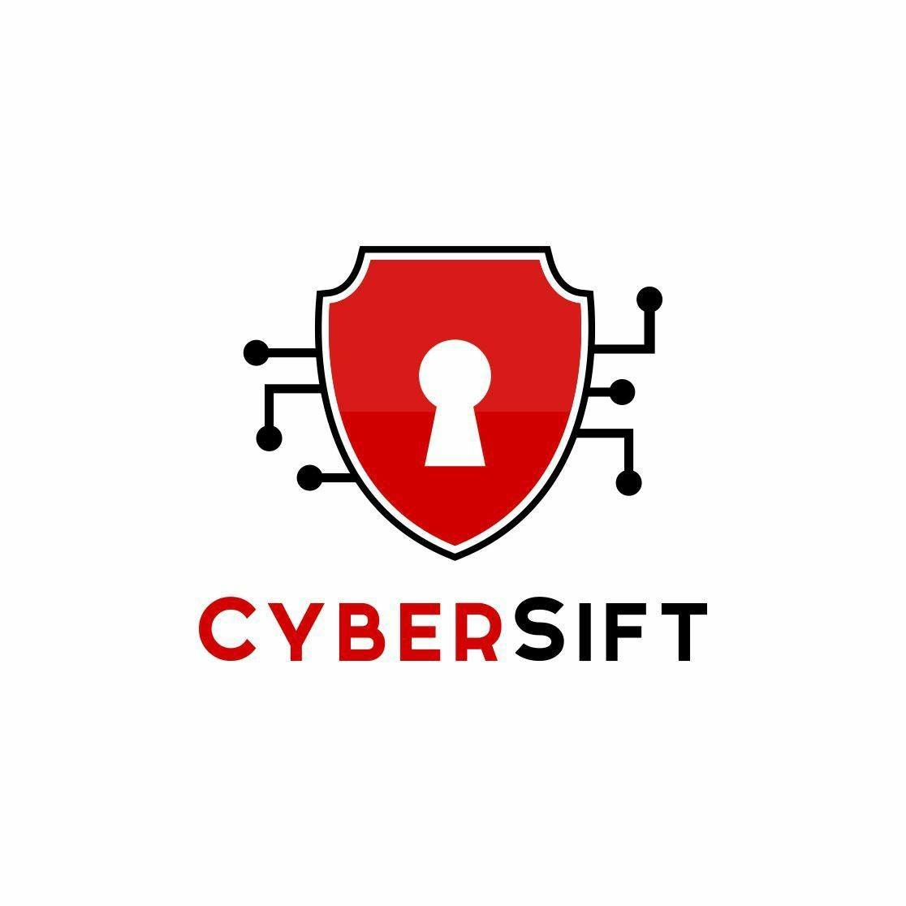
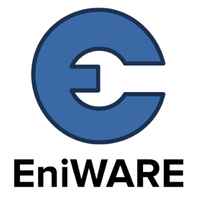

	<body class="is-preload">
		<div id="page-wrapper">
			<!-- Main -->
				<div id="main" class="wrapper style1">
					<div class="container">
						<header class="major">
							<h2>Experience</h2>
							<p>Gaining professional experience is one of the great excitements for me.</p>
							<a href="cv/NikolayIvanov_CV.pdf" target="_blind" class="button">. CV .</a></li>
							<br>
						</header>
						<div class="row gtr-150">
							<div class="col-4 col-12-medium">

								<!-- Sidebar -->
									<section id="sidebar">
										<h3>Current Job</h3>
										<section>
											<a href="https://cybersift.io/" target="_blind" class="image"></a>
											<h3>CyberSift (Aug 2021)<br>Junior Security Engineer</h3>
											<footer>
												<ul class="actions">
													<li><a href="https://cybersift.io/" target="_blind" class="button">Learn More</a></li>
												</ul>
											</footer>
											<hr />
										</section>
										<h3>Previous Job</h3>
										<section>
											<a href="https://eniware.org/" target="_blind" class="image"></a>
											<h3>EniWARE (Jan 2019 - Jun 2020)<br>Junior Network Administratir</h3>
											<p>My internship in EniWARE was full of excitements,
											hours of reading and researching and valuable practices
											and pieces of advice. People there taught me virtualization,
											how to work with Linux and the basics of networking.
											I had the opportunity to gain experience with real servers
											and got familiarised with LoRaWAN technology.</p>
											<footer>
												<ul class="actions">
													<li><a href="https://eniware.org/" class="button">Learn More</a></li>
												</ul>
											</footer>
											<hr />
										</section>
									</section>

							</div>
							<div class="col-8 col-12-medium imp-medium">

								<!-- Content -->
									<section id="content">
										<a href="#" class="image fit">Photo by Manuel Geissinger from Pexels</a>
										<h3>Technical Experience</h3>
										<p>So far, I have had experience in an organisation called EniWARE.
										There I gained motivation to learn and comprehend new knowledge.
										This idea of motivation and my interests in technology are still growing.
										Meaning I am looking forward to new experiences and possible adventures.</p>
										<p>List of my technical jobs:</p>
										<ul>
											<li>CyberSift (Aug 2021) - Junior Security Engineer</li>
											<li>EniWARE (Jan 2019 - Jun 2020) - Junior Network Administratir</li>
										</ul>
										<hr />
										<h3>Non-technical Experience</h3>
										<p>In the past couple of years, I have had a few jobs in the non-technical
										field. They have helped me develop professional communication skills,
										getting used to a professional environment and work in stressful
										circumstances. My job at hotel Kalina Palace improved my
										communications skills on international level.</p>
										<p>List of my non-tech jobs:</p>
										<ul>
											<li>VENTEX BG LTD. (London, IG11 7NZ) – Retail Assistant (Jul 2020 - Sep 2020 / Jun 2018 - Sep 2018)</li>
											<li>Hotel Kalina Palace / KM VARNA LTD (Bulgaria) – Receptionist (Jul 2019 - Mar 2020)</li>
											<li>GWG – Gabrovo (Bulgaria) – Turner (Nov 2018 – Feb 2019)</li>
										</ul>
									</section>

							</div>
						</div>
					</div>
				</div>
		</div>
	</body>
</html>